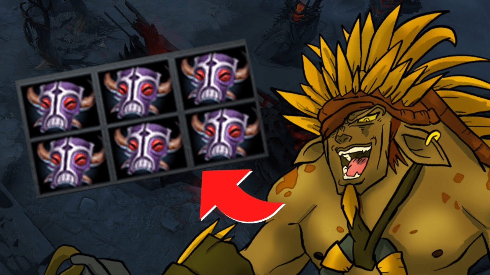

Bristleback

Скиллы
-
Скилл 1: Quill Spray - Описание: Наносит урон врагам вокруг Bristleback.
-
Скилл 2: Viscous Nasal Goo - Описание: Замедляет врагов и наносит им
урон.
-
Скилл 3: Bristleback - Описание: Увеличивает защиту и наносит урон
врагам, атакующим сзади.
-
Ультимейт: War Path - Описание: Увеличивает скорость передвижения и урон
в зависимости от полученного урона.
Как играть
Стратегия игры за Bristleback: Используйте Quill Spray для нанесения урона
в бою и старайтесь получать урон сзади, чтобы активировать Bristleback.
Играйте агрессивно и не бойтесь вступать в бой.
Назад к списку персонажей